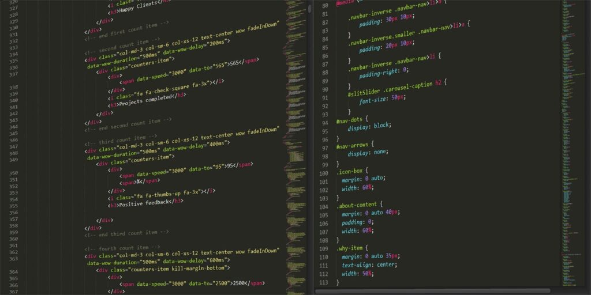

Mahasiswa Akhir yang ingin menjadi Front End Proffesional, dan ingin bekerja di startup Besar
IVAN ALRASYID
Tentang Saya

Semangat
Semangat dalam belajar Hal baru dan pekerjaan rumah

Professional dalam Team
Dapat bekerja sama dengan team , dalam tekanan tea

Berfikir Kritis
Dapat berfikir dalam keadaan tidur

Hidup Seperti Lerry